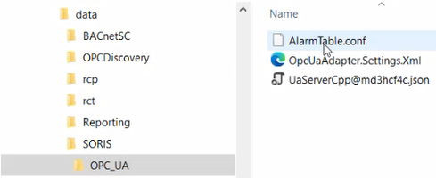
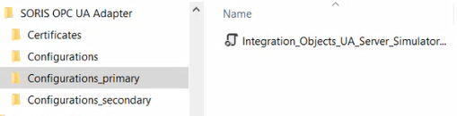
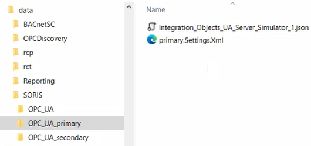

OPC UA Configuration Backup and Restore
When an OPC UA adapter is started, in C:\Program Files (x86)\Siemens\SORIS OPC UA Adapter, the Configurations folder is created, which includes the AlarmTable.conf file and any other files that allow connecting to the OPC UA servers.

Each time you save your configuration changes, a backup of these files is automatically available at C:\Data\GMSProjects\[project]\data\SORIS\OPC_UA.

When you back up the Desigo CC project, also these files are automatically included in the backup of a Desigo CC project.
Anyway, when you restore a Desigo CC project, you must manually copy the OPC UA configuration backed up files from the backup folder (C:\Data\GMSProjects\[project]\data\SORIS\OPC_UA) to the respective destinations:
- OpcUaAdapter.Settings.xml to C:\Program Files (x86)\Siemens\SORIS OPC UA Adapter
- Any other backed up files to C:\Program Files (x86)\Siemens\SORIS OPC UA Adapter\Configurations
Similarly, in case of multiple OPC UA adapters, in C:\Program Files (x86)\Siemens\SORIS OPC UA Adapter, multiple Configurations_[adapter service name] folders are created, each one including any other files that allow the specific adapter to connect to the specific OPC UA servers.

Each time you save your configuration changes of the specific adapter, a backup of these files is automatically available at C:\Data\GMSProjects\[project]\data\SORIS\OPC_UA_[adapter service name].

Again, when you back up the Desigo CC project, also these files are automatically included in the backup of a Desigo CC project.
Anyway, when you restore a Desigo CC project you must manually copy the OPC UA configuration backed up files from the specific backup folders (C:\Data\GMSProjects\[project]\data\SORIS\OPC_UA_[adapter service name]) to the respective specific destinations:
- [adapter service name].Settings.xml to C:\Program Files (x86)\Siemens\SORIS OPC UA Adapter
- Any other backed up files to C:\Program Files (x86)\Siemens\SORIS OPC UA Adapter\Configurations_[adapter service name]).